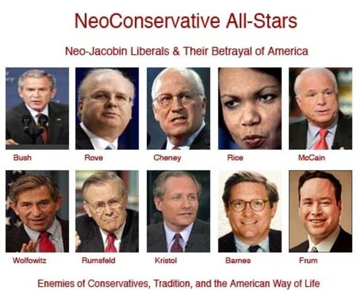

Neo Conservative (Neocon)

The Neocons (source: 2012patriot.wordpress.com)
Info
Neoconservatism, variant of the political ideology of conservatism that combines features of traditional conservatism with political individualism and a qualified endorsement of free markets. Neoconservatism arose in the United States in the 1970s among intellectuals who shared a dislike of communism and a disdain for the counterculture of the 1960s, especially its political radicalism and its animus against authority, custom, and tradition.
In its respect for established institutions and practices, neoconservatism resembles the traditional conservatism of the 18th-century Irish statesman Edmund Burke. Neoconservatives, however, tend to pay more attention than traditional conservatives to cultural matters and the mass media—to music, art, literature, theatre, film, and, more recently, television and the Internet—because they believe that a society defines itself and expresses its values through these means. Western (and particularly American) society, they charge, has become amoral, adrift, and degenerate. As evidence of the moral corruption of Western culture, they cite violent and sexually explicit films, television programs, and video games, and they point to popular music that is rife with obscenities that have lost their capacity to shock and disgust. Actions once regarded as shameful are now accepted as normal. For example, most people in the West now consider it perfectly acceptable for unmarried men and women to live together and even to have children. These phenomena amount to “defining deviancy down,” as the neoconservative sociologist and U.S. senator Daniel Patrick Moynihan once charged.
Such degenerate behaviour, say neoconservatives, indicates a broader and deeper cultural crisis afflicting Western civilization. The American political scientist James Q. Wilson, for example, traced the crisis to the 18th-century European Enlightenment, which encouraged people to question established authority, to criticize religion, and to reject traditional beliefs. Other neoconservatives blame the “adversarial” counterculture of the 1960s, which dismissed traditional values and religion as old-fashioned, irrelevant, or even reactionary. Whatever its source, neoconservatives maintain that this degeneration represents a real and present danger to Western civilization.
In economics, neoconservatives believe that markets are an efficient means of allocating goods and services. They are not, however, wholehearted advocates of free-market capitalism. As Kristol remarked, capitalism deserves two cheers, not three, because its innovative character produces almost-constant social upheavals and disruptions. Moreover, as the neoconservative sociologist Daniel Bell argued, capitalism harbours various “cultural contradictions” that undermine its own social and ethical foundations. Capitalism presupposes a willingness to save, to invest, and to defer gratification; at the same time, through advertising and marketing techniques, it encourages people to indulge themselves, to live on credit, and to pay little heed to the farther future. Unregulated capitalism, moreover, creates great wealth alongside dire poverty; it richly rewards some people while leaving others behind. And since great disparities of wealth make the wealthy contemptuous of the poor and the poor envious of the rich, capitalism can create conditions that cause class conflict, labour unrest, and political instability. To reduce, though certainly not to eliminate, such disparities, neoconservatives support the graduated income tax, the inheritance tax, the modern welfare state, and other means by which a social “safety net” might be placed underneath society’s less-fortunate members.
In economics, neoconservatives believe that markets are an efficient means of allocating goods and services. They are not, however, wholehearted advocates of free-market capitalism. As Kristol remarked, capitalism deserves two cheers, not three, because its innovative character produces almost-constant social upheavals and disruptions. Moreover, as the neoconservative sociologist Daniel Bell argued, capitalism harbours various “cultural contradictions” that undermine its own social and ethical foundations. Capitalism presupposes a willingness to save, to invest, and to defer gratification; at the same time, through advertising and marketing techniques, it encourages people to indulge themselves, to live on credit, and to pay little heed to the farther future. Unregulated capitalism, moreover, creates great wealth alongside dire poverty; it richly rewards some people while leaving others behind. And since great disparities of wealth make the wealthy contemptuous of the poor and the poor envious of the rich, capitalism can create conditions that cause class conflict, labour unrest, and political instability. To reduce, though certainly not to eliminate, such disparities, neoconservatives support the graduated income tax, the inheritance tax, the modern welfare state, and other means by which a social “safety net” might be placed underneath society’s less-fortunate members.
Neoconservatives have been especially influential in the formulation of foreign and military policy, particularly in the administrations of Presidents Ronald Reagan, George H.W. Bush, and George W. Bush. They contend that power—military, economic, or political—that is unused is for all practical purposes wasted. The military might of the United States should be employed around the world to promote American interests. And it is in the interests of the United States, they say, to promote the development of democratic regimes abroad, in as much as democracies (according to the “democratic peace” hypothesis proposed by some political scientists) do not wage war against one another. Neoconservatives wish, in the words of Pres. Woodrow Wilson, to “make the world safe for democracy.” And indeed, neoconservatives often describe their views on foreign policy as “Wilsonian.” They view Wilson as an idealist who came to the Paris Peace Conference (1919) at Versailles with proposals for a just and lasting peace that were denigrated and defeated by cynical European politicians bent on punishing Germany for its role in starting World War I. Back in the United States, Wilson’s proposals for a League of Nations and for the country’s membership in that organization were defeated by isolationist politicians. The all-too-real result of such cynical anti-idealism was another and even bloodier second world war. Thus, idealism, far from being impractical, can produce politically practical and even admirable results.
Source
Ball, Terence. Britannica